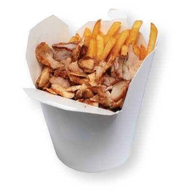

Kebab

Description
It is typically served as a sandwich rolled in pita bread, or on a plate, with french fries and various salads and sauces such as tzatziki.
ingredients
- 1 pound ground lamb (or 1/2 pound each of ground lamb and ground beef)
- 1 large egg.
- 4 clove garlic, peeled and finely minced.
- 1 teaspoon ground cumin.
- 1 teaspoon ground coriander.
- 1 teaspoon smoked paprika.
- 1 teaspoon dried oregano.
- 1/2 teaspoon kosher salt.
Steps
- Prep Your Skewers
- Marinate for Flavor
- Prep the Veggies
- Assemble the Kebabs
- Cook on Hot Grill or Stove-Top
- Serve Them Up